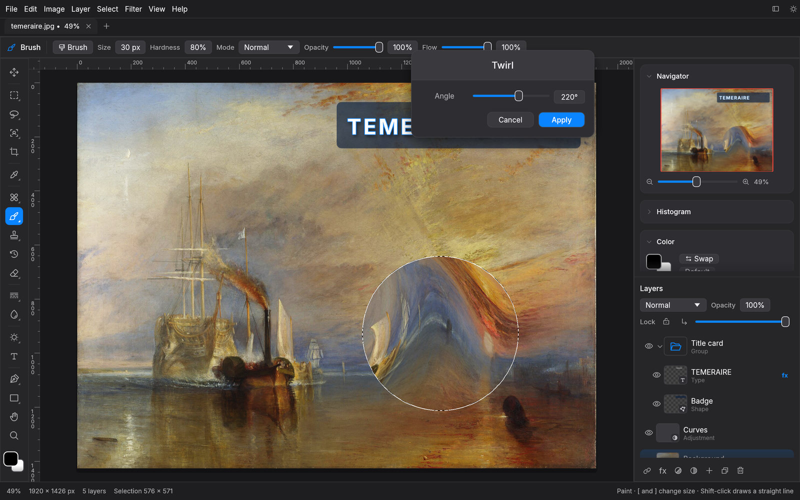
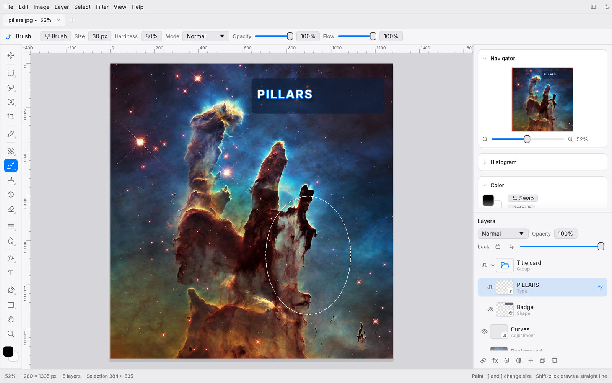
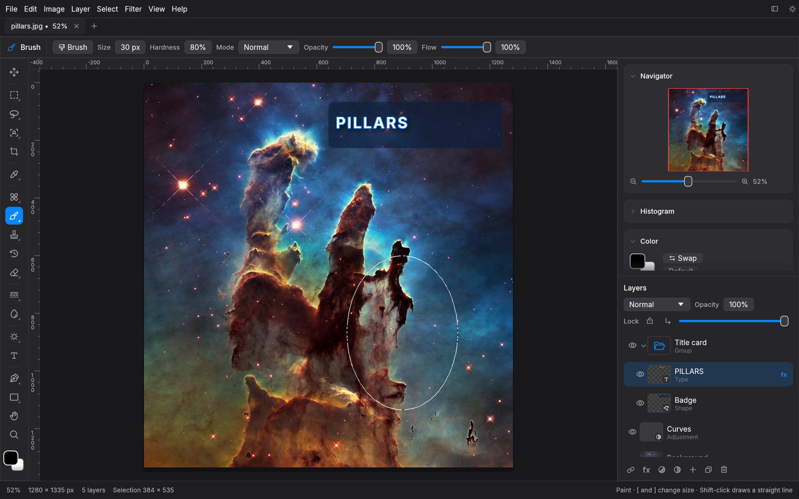
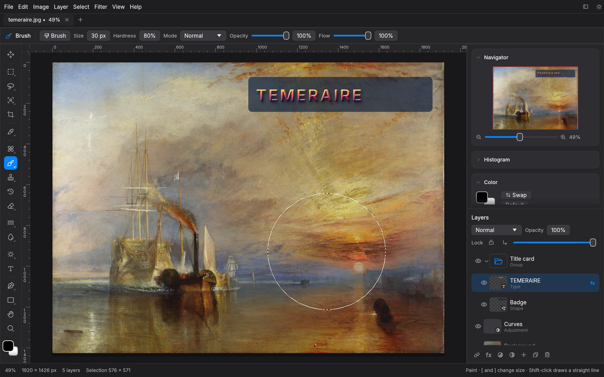
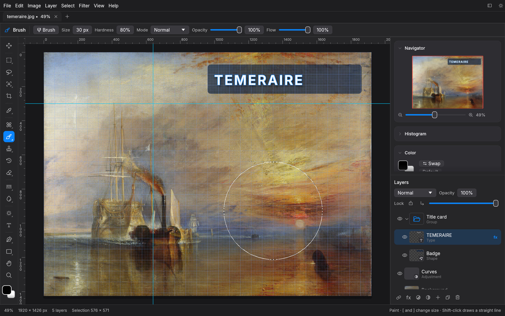
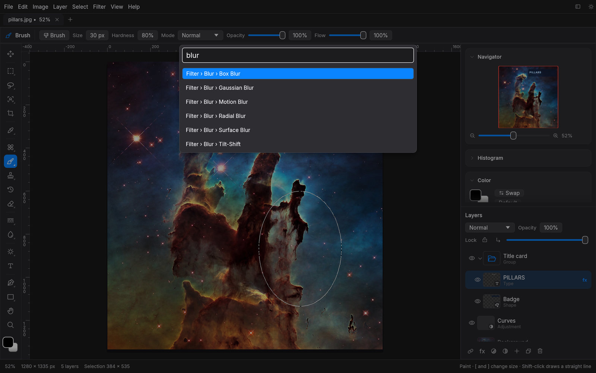

◎
Selections that think
Object Selection, Select Subject, Quick Selection, magic wand, Color Range, lassos and marquees. Quick Mask and saved selections.
Free · Open source · macOS, Windows & Linux
Layers and groups, masks, smart objects, content-aware fill, layer styles, the Pen tool and 33 filters, in a native app that opens in an instant and works offline.

The Fighting Temeraire, J. M. W. Turner, 1839. Public domain.
Non-destructive
Stack Curves, Levels, Hue/Saturation, Color Balance, Black & White, Gradient Map and ten more as live adjustment layers. Mask them, reorder them, switch them off. Your original pixels never change.

Live preview
Every filter and adjustment previews right on the canvas, limited to your selection. On a smart object, filters stay live: toggle, tweak or remove them any time.

Ten layer styles
Bevel & Emboss, Satin, Stroke, inner and outer shadows and glows, and color, gradient and pattern overlays, live on any layer, including type.

Object Selection, Select Subject, Quick Selection, magic wand, Color Range, lassos and marquees. Quick Mask and saved selections.
Nest layers in pass-through or isolated groups. Smart objects scale without loss and keep their filters editable.
Brush presets with textures, dual brush, scatter and color dynamics. Clone, pattern and history brushes, healing, red eye, dodge and burn.
Bézier paths become selections, fills, strokes or shape layers. Horizontal and vertical type with bundled fonts.
PSD with groups, OpenRaster for Krita and GIMP, SVG, EXR, AVIF export, plus PNG, JPEG, WebP, TIFF and more.
Paint over anything with Remove, patch blemishes, move objects and let the gap fill itself.
Familiar by design
Shortcuts where your hands expect them: V, M, L, W, C, I, J, B, S, E, G, T, P, U, H, Z, plus ⌘J, ⌘G, ⌘T and ⇧⌘I. Rulers, guides and snapping keep everything lined up.

⌘F
The command palette searches every menu item, adjustment and filter. Type a few letters and press Return.

For automation
The same engine runs headless. Batch-resize a folder, auto-tone a shoot or sharpen for the web in one line.
$ photo-studio-cli photo.jpg --adjust autotone --filter unsharp=80,1.5 -o out.jpg
$ photo-studio-cli batch ./shoot --out-dir ./web --format webp --resize 1600
✓ IMG_0412.jpg → web/IMG_0412.webp
✓ IMG_0413.jpg → web/IMG_0413.webp
48 of 48 doneFree and open source under the MIT license.
On macOS, right-click the app and choose Open the first time. All releases · Source